Project Background
Content for Dashboard...
Vulnerability Introduction
Authentication security is a fundamental aspect of web application security, as it ensures that only authorized users can access sensitive information or perform privileged actions. The process typically involves verifying a user's identity through methods such as passwords, multi-factor authentication (MFA), or third-party login systems like OAuth. Authentication vulnerabilities occur when there are weaknesses in these verification mechanisms, such as poor password handling, session management flaws, or the absence of robust multi-factor authentication.
The impact of such vulnerabilities can be severe: attackers can gain unauthorized access to user accounts, escalate privileges, steal sensitive data, and even compromise the entire system. For instance, a weak password policy or failure to enforce MFA can make an application an easy target for credential stuffing or brute-force attacks, while flaws in session management can lead to session hijacking, allowing attackers to impersonate legitimate users. In the worst cases, these vulnerabilities can lead to large-scale data breaches, financial losses, reputational damage, and legal consequences. Consequently, securing the authentication process is critical not only for protecting users' privacy but also for maintaining the overall integrity and trustworthiness of the web application.
Locating Vulnerability
1. Comprehensive Review of Authentication
The first step in locating authentication vulnerabilities is to perform a detailed review of the application's authentication flow. This involves analyzing how users interact with the system when logging in, registering, and managing their accounts. Pay close attention to the login page, registration process, password reset functionality, and any multi-factor authentication (MFA) mechanisms. Review both the frontend (user interface) and the backend (server-side logic) to identify potential weaknesses, such as unprotected endpoints or insecure data transmission. Ensure that the authentication flow follows secure design principles, like ensuring that credentials are never sent over unencrypted channels and that error messages do not reveal sensitive information. A thorough examination of the authentication process can help uncover basic flaws or omissions that attackers might exploit.
2. Check for Weak Password Policies
One of the most common vulnerabilities in authentication systems is weak password policies. Attackers can exploit these weaknesses through techniques like brute force or credential stuffing, where they attempt to guess or use previously leaked passwords. To identify these vulnerabilities, evaluate the password complexity requirements enforced by the application. Ideally, passwords should be required to include a mix of upper- and lower-case letters, numbers, and special characters. Additionally, password length should be a minimum of 8-12 characters. If the application allows users to set weak or easily guessable passwords (e.g., "123456" or "password"), it presents a significant risk. Testing the system with common weak passwords can help identify whether such vulnerabilities exist and highlight areas where the application needs stronger password enforcement.
3. Check for Improper Error Handling and Information Disclosure
Error messages can inadvertently reveal valuable information to attackers that helps them identify weaknesses in the authentication process. For example, overly verbose error messages during login attempts can disclose whether a username or password is incorrect, which makes it easier for attackers to perform targeted attacks such as credential stuffing or brute forcing. To identify these vulnerabilities, test how the application responds to invalid login attempts. Ideally, error messages should be generic and not disclose specific reasons for failure (e.g., "Invalid login credentials" rather than specifying whether the username or password is incorrect). Additionally, check for detailed stack traces or debugging information in error responses, which could provide insights into backend vulnerabilities. Ensuring that error handling is secure and does not leak sensitive information is a key part of a secure authentication system.
Fixing Vulnerability
1. Password_hash: Cyber_Proj\application\controllers\Web.php & Cyber_Proj\system\core\compat\password.php
The core function of this function is to convert the user's plaintext password into a secure hash value, which is encrypted using the bcrypt algorithm and automatically handles the generation and formatting of the salt value. In terms of security, the function employs multiple protection mechanisms: it first verifies the validity of the incoming parameters, including checking the type of algorithm, verifying the range of cost values (between 4-31), and checking the length of the salt value. For the generation of the salt value, the function implements multiple secure random number generation schemes in descending order of priority, and tries to use random_bytes(), mcrypt_create_iv(), /dev/urandom, openssl_random_pseudo_bytes(), etc., in turn, to ensure that the generation of cryptographically secure random salt values. Also, the function handles character encoding (mbstring support) with standardized base64 encoding.
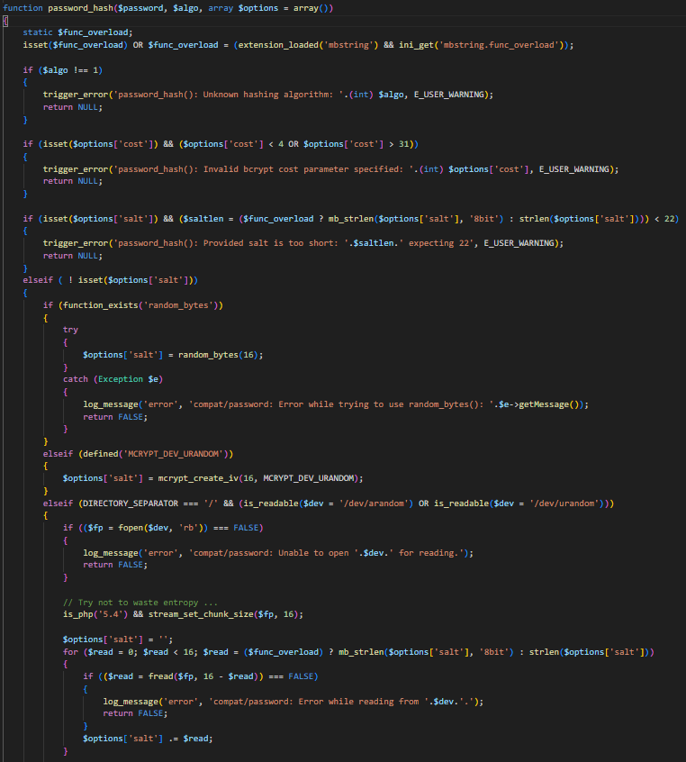 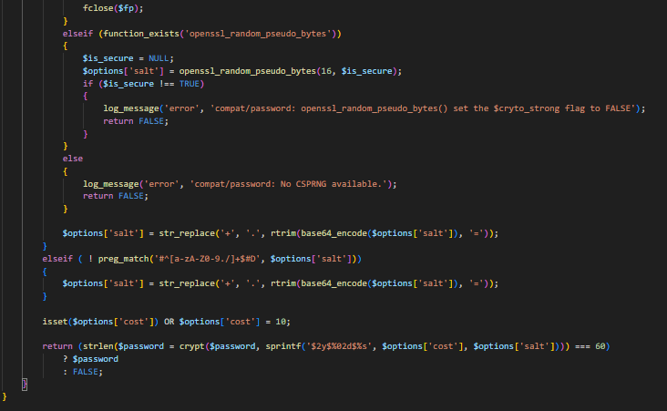
Vulnerability Introduction
File upload vulnerability is a common security risk in Web applications. Attackers can upload malicious files through this vulnerability to perform unauthorized operations. Typically, this type of attack takes advantage of the server's failure to strictly verify the type, size, extension, or content of the uploaded file, allowing malicious files to bypass security checks. An attacker can upload a script file (such as PHP, ASP, etc.) to execute arbitrary code on the server, or upload a file that contains malicious code, causing the server or other users to be attacked.
The impact of a file upload vulnerability can be catastrophic. Attackers can implement remote code execution (RCE) through malicious files to control server resources. It is also possible to upload malware or viruses to infect servers and users. In addition, uploading unrestricted files can also trigger a denial of service attack (DoS), depleting server resources and causing the system to crash. In the most severe cases, attackers can even gain complete control of a system through malicious files, causing data breaches, service disruptions, and even compromising the security and integrity of the entire system.
Locating Vulnerability
1. Inadequate file type validation
Attackers may upload malicious script files (e.g. PHP, ASP, JSP, etc.) disguised as legitimate files. If the system determines the file type only by the file extension without checking the actual content or MIME type of the file in depth, the malicious file can easily bypass the validation and execute on the server. Therefore, the actual content and MIME type of uploaded files must be strictly verified to avoid relying only on extension filtering.
2. Unreasonable File Size Limits
If the size of uploaded files is not reasonably limited, an attacker may exhaust server storage space or memory resources by uploading huge files, resulting in a denial of service (DoS) attack. To address this vulnerability, it is necessary to set an upper limit on the size of uploaded files on the server side, and reasonably adjust the limit according to the application scenario.
3. Unprotected File Storage Path
If the storage path of a file after upload is not properly configured, an attacker may be able to access, download, or execute the uploaded file directly through a specific path. This type of vulnerability is particularly dangerous because an attacker can use an uploaded malicious file to perform remote code execution. Therefore, it should be ensured that uploaded files are stored in a secure directory with appropriate access rights configured (e.g., disallowing direct access via URL).
4. Improper handling of file names
If the name of an uploaded file is not handled appropriately, an attacker may be able to manipulate the file by using a specially crafted filename (e.g., with the directory traversal character “... /") to manipulate file storage paths to overwrite or access other files on the server. To prevent this vulnerability, uploaded files should be renamed and path handling should be secured.
5. Allowed filetype whitelist
A file type whitelist is a security approach that explicitly defines which file types are permitted for upload while blocking all others. This "deny by default, allow by exception" principle is crucial for upload security. The whitelist should validate files through multiple layers: file extensions, MIME types, and actual file content validation.
6. None executable header
The implementation of non-executable headers is a critical security measure for protecting against file upload attacks. When files are uploaded to a server, there's always a risk that malicious users might attempt to upload executable files (like .php, .exe, or script files) that could be executed by the web server if accessed directly. By setting appropriate non-executable headers, you instruct the browser to treat downloaded files as binary data or attachments rather than executable content, even if an attacker manages to bypass other security measures. Key headers like 'X-Content-Type-Options: nosniff' prevent browsers from trying to guess (or "sniff") the content type, which could otherwise lead to arbitrary code execution. The 'Content-Disposition: attachment' header forces the browser to download rather than execute or display the file inline, while 'Content-Type' headers explicitly define how the browser should handle the content. Without these headers, even with extension and MIME type validation in place, there's still a risk that a carefully crafted malicious file could be executed by the browser or intermediary systems, potentially leading to remote code execution, cross-site scripting (XSS), or other security vulnerabilities.
7. Htaccess
The .htaccess file plays a crucial role in protecting against file upload attacks by providing server-level security controls. When implementing file upload functionality, properly configured .htaccess rules can act as a last line of defense even if other security measures fail. By setting appropriate Apache directives, you can prevent the execution of potentially malicious files in upload directories, deny direct access to sensitive file types, and enforce specific handling of file types. For example, even if an attacker successfully uploads a PHP file disguised as an image, .htaccess rules can prevent its execution by either blocking access to PHP files entirely in upload directories or forcing all files to be downloaded rather than executed.
Fixing Vulnerability
1. File upload related variable definition: system\libraries\Upload.php, system\core\Security.php
$filename_bad_chars: The security-related variable that defines characters and character sequences that should not be allowed in filenames.
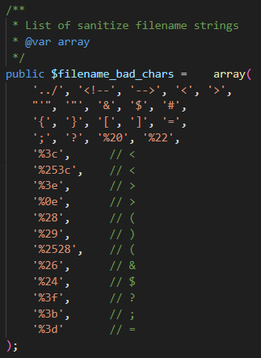2. Sanitize_filename() method
sanitize_filename(): The security-focused function designed to clean potentially malicious filenames
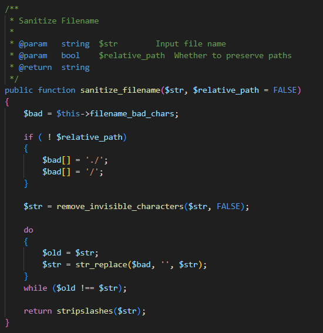3. set_allowed_types() method
set_allowed_types(): Modified to always convert types to lowercase for consistency.Removed the option for '*' (allow all types) to enforce stricter control.
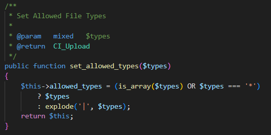4. is_allowed_filetype() method
Removed the $ignore_mime parameter to always perform MIME type checking. Added MIME type verification using PHP's finfo class, which is more reliable than relying on client-provided information. Kept the getimagesize() check to ensure the file is a valid image.
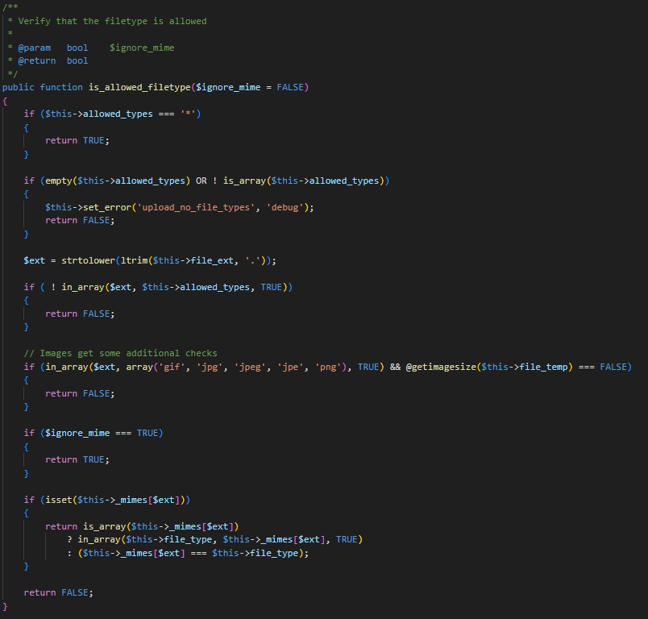5. prep_filename() method:
Simplified to use a regex that only allows alphanumeric characters, underscores, and hyphens in the filename. This helps prevent directory traversal attacks and other potential security issues related to malicious filenames.
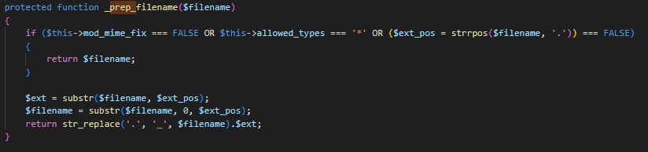6. getimagesize() method:
The getimagesize() method is used to verify that the file is actually an image, not just named like one.
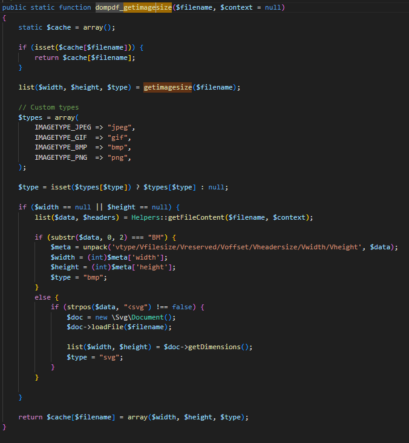7. set_header() method:
This modified set_header method adds the following security measures: For the Content-Type header: Checks to see if a MIME type (such as PHP, HTML, or JavaScript) is set that could cause security issues. If an insecure MIME type is detected, a warning is logged and the Content-Type is set to a safe default. For the Content-Disposition header: Checks the filename, removes potentially harmful characters, and retains only letters, numbers, hyphens, underscores, and dots.
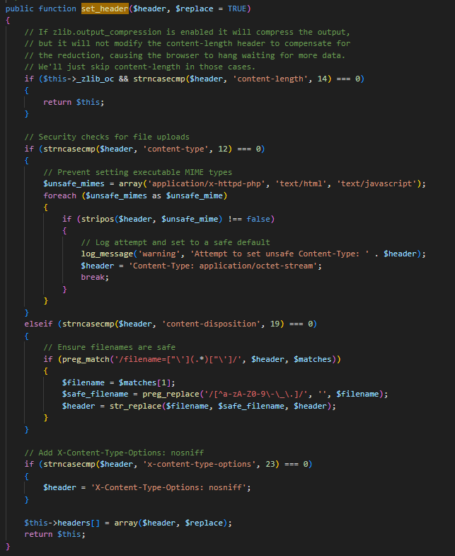8. IfModule authz_core_module:
This is a conditional statement that checks to see if a specific module is enabled on the server. It detects if the module authz_core_module is loaded and decides to use a different syntax to implement access restrictions. This is because Apache 2.4 and above has a different access control syntax than previous versions.
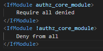8. set_filename function:
Its main purpose is to generate a secure and unique filename for the uploaded file to avoid conflicts with existing files and to prevent certain security issues associated with file uploads.
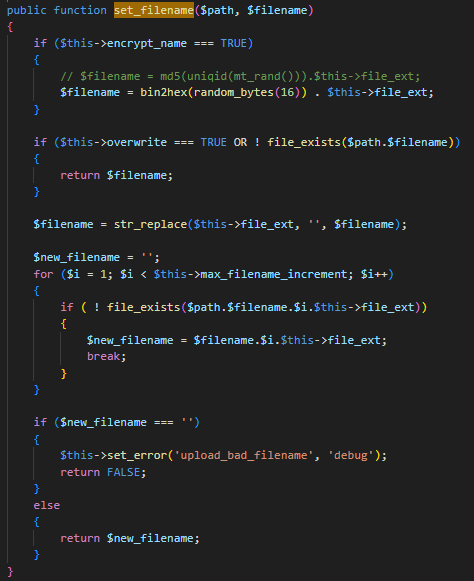Testing
Content for section 2...
Vulnerability Introduction
SQL injection is a critical vulnerability that occurs when an attacker is able to manipulate SQL queries by injecting malicious code into an application’s input fields, potentially gaining unauthorized access to a database. In the context of a CodeIgniter web application, SQL injection can occur if the application fails to properly sanitize user inputs before incorporating them into SQL queries. CodeIgniter, being a popular PHP framework, includes built-in security features such as Active Record (Query Builder) that help mitigate SQL injection risks by automatically escaping user inputs. However, if developers bypass these safeguards and directly use raw SQL queries without proper input validation or escaping, it can lead to severe security issues. Attackers exploiting SQL injection vulnerabilities can potentially retrieve sensitive data, modify or delete records, and even gain full control over the database, posing significant threats to the security and integrity of the application. To prevent SQL injection in CodeIgniter, developers should consistently use prepared statements, utilize the Query Builder, and validate and sanitize all user inputs.
Locating Vulnerability
1. Identify Input Points
Start by mapping out all user input fields such as search boxes, login forms, URL parameters, or any other form fields where users can submit data. These are the primary vectors for SQL injection attacks.
2. Test Input Validation
test the input fields by entering suspicious characters or SQL-related keywords like ' OR 1=1 -- or '; DROP TABLE users; --. If the application returns an error or behaves unexpectedly, it could indicate a potential vulnerability.
3. Check for Error Messages
When testing input fields, watch for detailed database error messages that disclose SQL syntax or database structure. These errors may reveal potential entry points for attackers and are a sign that input sanitization might be missing.
4. Review Source Code
Inspect the source code, especially where user inputs are handled, to see how queries are built. If you find raw SQL queries (e.g., $this->db->query()) that incorporate user data without proper sanitization or escaping, this is a red flag for SQL injection.
5. Check for Prepared Statements
Ensure that any database queries are using CodeIgniter's Query Builder or Active Record class, which automatically escapes inputs. If the application is using raw SQL queries without binding parameters or escaping user inputs, it increases the risk of SQL injection.
Fixing Vulnerability
1. Database related variable path and definitions: system\database\DB.php system\database\DB_cache.php system\database\DB_driver.php
2. Bind Marker Validation
Checks if there's a bind marker (typically something like '?') in the SQL query. If there's no bind marker or if it's not found in the SQL, it returns the raw SQL.

3. Binds Array Normalization
Ensures consistent handling of bind parameters by converting single values to arrays and reindexing array keys numerically. This standardization helps prevent injection by ensuring proper parameter formatting

4. String Literal Protection
It identifies all string literals in the SQL query (content within single or double quotes) and protects them from being mistakenly treated as bind markers. This prevents injection attacks that might try to exploit string content that coincidentally matches the bind marker pattern.

5. Parameter Count Validation
Ensures the number of provided parameters exactly matches the number of bind markers in the query. Any mismatch could indicate an injection attempt or programming error, and the function safely returns FALSE instead of executing potentially dangerous SQL.

6. Value Escaping
This section properly escapes values before they're inserted into the query. The escape() method (not shown) presumably handles proper SQL escaping of different data types. This is the primary defense against SQL injection, ensuring that special characters in input values can't break out of their intended context.

7. Secure Value Replacement
code uses substr_replace() rather than string concatenation or simple replacement, which provides precise control over where values are inserted into the query. This prevents attackers from injecting SQL fragments that might be interpreted as part of the query structure.

8. _sql_injection_patterns
With the given patterns, the regex looks for these words with either spaces or at the start/end of the string. By blocking UNION, UPDATE, DELETE, INSERT, and DROP commands, it prevents attackers from executing unauthorized database operations that could modify or delete data. The /i flag makes the matching case-insensitive for better security coverage. Functions like SLEEP(), WAITFOR DELAY, and BENCHMARK() are commonly used in blind SQL injection attacks where attackers try to deduce information based on the response time of the database, it could prevents attackers from using timing attacks to extract information from the database even when they can't see the direct output..

9. _check_sql_injection($sql)
This function serves as the main validation method, iterating through all defined patterns and checking if any match the input SQL string. If a match is found, it returns TRUE, indicating a potential SQL injection attempt.

Testing
Content for section 3...
Vulnerability Introduction
Cross-Site Request Forgery (CSRF) is a common Web security vulnerability that allows an attacker to send malicious requests as a user without authorization. This attack exploits the authentication information of the user in the login state to trick them into performing unintended actions. Attackers typically embed malicious requests into legitimate websites visited by users by spoofing links or forms, causing users to unknowingly perform sensitive actions such as modifying account information or submitting transaction requests.
The impact of CSRF vulnerabilities can be severe, especially on platforms that involve sensitive data or transactions. Successful attacks may lead to user account tampering, fund transfer, leakage of private information, and even in the case of administrator account hijacking, the attacker may gain full control of the system. As a result, CSRF vulnerabilities not only pose a personal risk to users, but may also compromise the integrity and security of the entire system.
Locating Vulnerability
1. Indicates the security vulnerability of application session
Application sessions are the basis for user authentication and authorization, and an attacker can exploit an existing session to initiate a malicious request. Unprotected sessions can cause serious security problems, especially session fixation, which allows an attacker to exploit a user's valid session. The risk of CSRF attacks can be mitigated by strengthening session security, in particular by generating a unique session ID and updating it regularly.
2. Security vulnerability of web cookie
CSRF attacks rely on the fact that the user's Cookie is automatically sent in a request. Cookies usually contain sensitive information such as session ids, and if this information is leaked or maliciously exploited, attackers can impersonate users to initiate requests. Therefore, it is important to protect the security of cookies. By enabling attributes such as HttpOnly, Secure, and SameSite, you can restrict how cookies are accessed and transmitted, reducing the opportunity for attackers to exploit them. In unprotected scenarios, cookies are automatically included in user requests. It is by manipulating this feature that CSRF attacks enable malicious requests to succeed. Therefore, ensuring the security of cookies can significantly reduce the attack surface.
3. Security of form interaction
Forms are a major vehicle for CSRF attacks, as many malicious requests exploit a user's logged in status by forging form submissions. The core of a CSRF attack is to trick users into submitting malicious forms. If the form submission is not verified with the CSRF token, any external site can forge the request and operate with the user's identity. Ensuring that each form contains a unique CSRF token prevents malicious form submissions. CSRF token authentication is one of the most effective measures to defend against CSRF attacks.
Fixing Vulnerability
1. CSRF related variable definition: Cyber_Proj/system/core/Security.php
$_csrf_hash: This is the hash of the CSRF token to verify that the request is legitimate. This hash value is generated each time a request is submitted and is saved in the user's browser Cookie.
$_csrf_expire: Defines the expiration time of the CSRF token. The default is 7200 seconds (2 hours). This time limit ensures that the token will not be valid for a long time, reducing the risk of being exploited.
$_csrf_token_name and $_csrf_cookie_name: Define the name of the CSRF token and the Cookie that holds it, respectively. These names are used to validate the request when the form is submitted.
2. Generates a CSRF hash: Cyber_Proj/system/core/Security.php
The method is responsible for generating the CSRF token. It first checks if the token in the Cookie already exists, and if it does and is in the correct format (a 32-character hexadecimal string), the token is used directly. If it does not exist or is incorrect, a new random number is generated as a token, obtained using get_random_bytes() or generated using the md5 hash function.
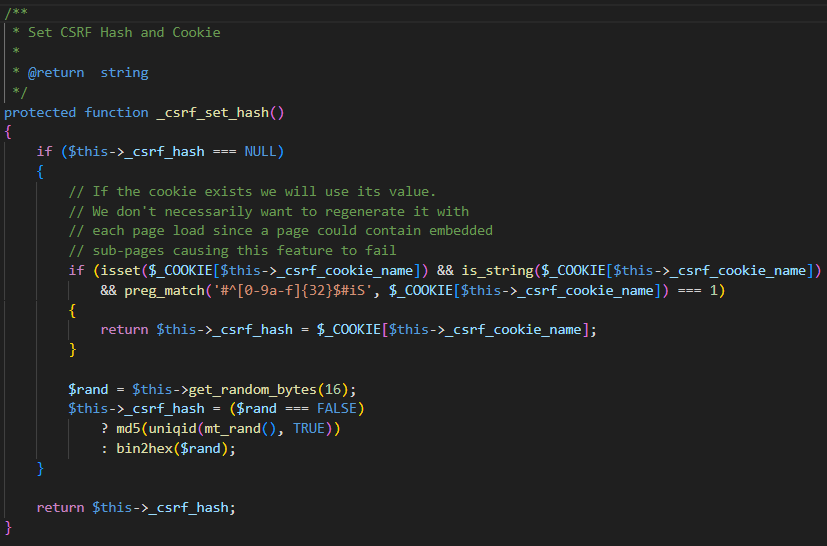3. CSRF constructor: Cyber_Proj/system/core/Security.php
The method checks whether CSRF is enabled at initialization and loads CSRF-related Settings from the configuration file, such as token expiration time, token name, Cookie name, and so on. If a Cookie prefix is set in the configuration, the prefix is also automatically added to the name of the CSRF Cookie. Finally, the _csrf_set_hash() method is called to generate the CSRF token.
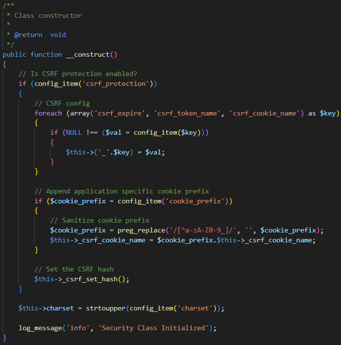4. CSRF verification: Cyber_Proj/system/core/Security.php
This function is used to verify the CSRF token. It first checks the request type, skipping validation for secure HTTP methods (GET, HEAD, OPTIONS, POST). For other request methods, it compares the CSRF token submitted by the form to the token stored in the Cookie. If the two do not match, a CSRF error is triggered. If automatic regeneration of CSRF tokens is enabled, old tokens are destroyed and new tokens are generated after each submission. Finally, the _csrf_set_hash() method is called to regenerate the token, ensuring that a separate token is used for each request.
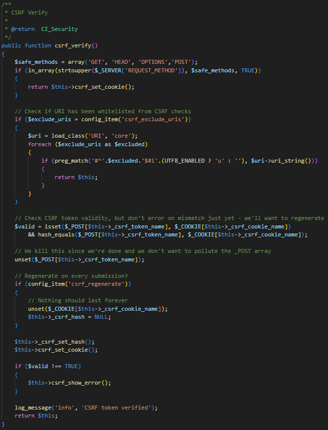5. CSRF Cookie: Cyber_Proj/system/core/Security.php
This function is responsible for storing the generated CSRF token in the user's browser Cookie. It sets the expiration time, Cookie path, domain name, secure transport (cookie_secure), and HttpOnly attribute (cookie_httponly) according to the configuration. If the current connection is not HTTPS and cookie_secure is TRUE, the Cookie is not set.
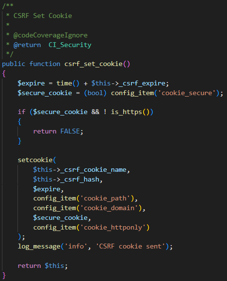6. CSRF error displayed: Cyber_Proj/system/core/Security.php
When CSRF token validation fails, this function triggers an HTTP 403 error indicating that the request is denied. This is to prevent unauthorized request operations.
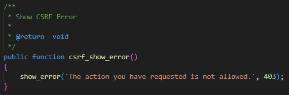8. Get the CSRF token and name: Cyber_Proj/system/core/Security.php
get_csrf_hash() : Returns the currently generated CSRF token.
get_csrf_token_name() : Returns the name of the CSRF token for use in the form.
9. CSRF Token in the form: Cyber_Proj/application/views/admin/pages
An array $csrf containing token names and hash values is generated by calling the get_csrf_token_name and get_csrf_hash methods from CodeIgniter's security class. In addition, a hidden input form field is created in the form, where the name attribute is the name of the CSRF token and the value attribute is the hash value of the CSRF token. This way, when the form is submitted, the CSRF token is sent to the server as part of the form data. By adding a CSRF token to the form, it prevents attackers from forging user identities and sending malicious requests. An attacker cannot easily obtain a legitimate CSRF token and therefore cannot impersonate a user through a forged form to initiate an operation.
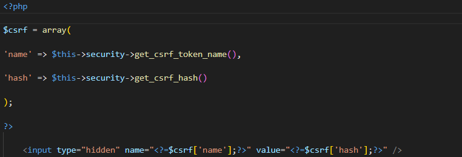10. Set the appropriate security configuration: Cyber_Proj/application/config/config.php
Enabling CSRF protection throughout the application ensures that every form submission in the application automatically generates and validates a unique CSRF token, which is verified on the server side to ensure that the request is from a legitimate source. This is a fundamental defense against CSRF attacks and prevents maliciously crafted forms from being executed.
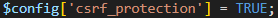In our implementation, we define the name of the CSRF token and the name of the corresponding CSRF cookie. In addition, we set the expiration time of the CSRF token to 2 hours. This ensures the user experience and prevents long-lived tokens from being utilized by attackers. At the same time, the automatic regeneration of CSRF tokens is enabled to ensure that the token is updated every time the form is submitted, which further improves security and avoids duplicate token usage. In order to improve application compatibility and flexibility, we have kept the option to exclude CSRF checks in certain scenarios. For example, for some external callbacks or interfaces that do not require CSRF protection, you can configure the configuration to exclude the relevant URIs to ensure that the application will not be blocked from normal business processes due to security checks.
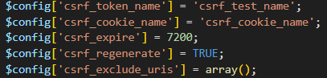In terms of enhancing cookie security, our current configuration allows cookies to be accessed via JavaScript and allows cookies to be transmitted over HTTP connections. In a production environment, we recommend enabling these two options, setting the HttpOnly and Secure properties to prevent CSRF token theft through XSS attacks, and ensuring that cookies are only transferred over HTTPS-encrypted connections to further enhance overall security.
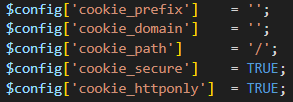Testing
1. Download the Postman test tool: https://www.postman.com/
When using Postman to test CSRF tokens, the main purpose is to simulate browser behavior by submitting a request containing the CSRF token through a form, ensuring that the server can verify the correctness of the CSRF token.
2. Test a legitimate request
Select specific request types which are included in the whiltelist such as GET and POST, then enter the destination URL and click send. If the server returns 200, it is successful; otherwise, 403 is denied.
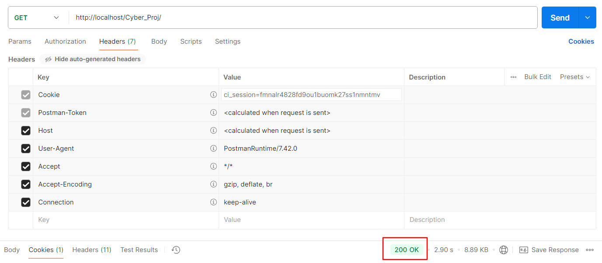3. Test CSRF Token value
Click Haders to view the cookie parameter. If there is a value and the secure state is ture, it indicates that the security protection of the csrf token is working
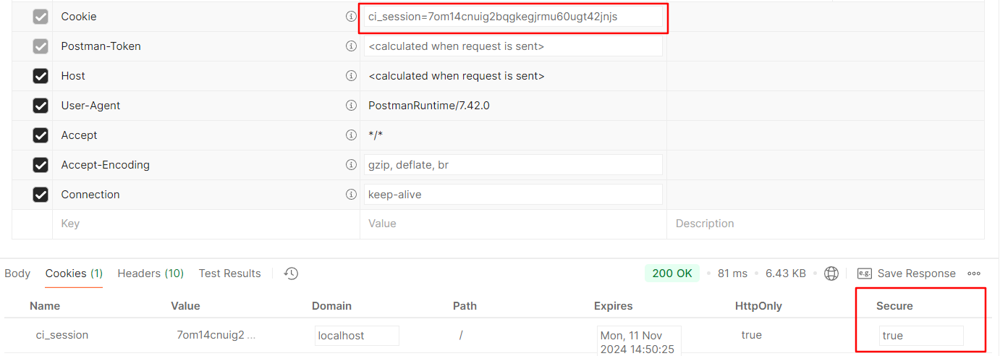